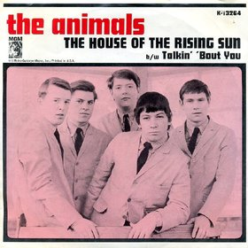

Day 2

The Animals - The House of the Rising Sun - 1964 网易云
引用维基百科：
这是一首传统民谣，也叫日晟蓝调。讲述了一个人在新奥尔良的悲惨生活，很多版本中还告诫兄弟姐妹不要不要重蹈覆辙。
An interview with Eric Burdon revealed that he first heard the song in a club in Newcastle, England, where it was sung by the Northumbrian folk singer Johnny Handle. The Animals were on tour with Chuck Berry and chose it because they wanted something distinctive to sing.
There is a house down in New Orleans They call the Rising Sun. And it's been the ruin of many a-poor boy And me--oh, God--I'm one My mother was a tailor She sewed these new blue jeans My sweetheart was a gambler, Lord Down in New Orleans Now the only thing a gambler needs Is a suitcase and a trunk And the only time he's satisfied Is when he's on a drunk He fills his glasses up to the brim And he'll pass the cards around And the only pleasure he gets out of life Is ramblin' from town to town Oh, tell my baby sister Not to do what I have done! But shun that house in New Orleans They call the Rising Sun Well it's one foot on the platform The other foot on the train! I'm goin' back to New Orleans To wear that ball and chain I'm a goin' back to New Orleans My race is almost run! I'm goin' back to end my life Down in the Rising Sun There is a house in New Orleans They call the Rising Sun It's been the ruin of many a-poor boy And me--oh, God--I'm one